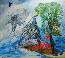
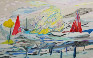
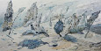
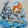
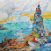

날 보고 춤춰 줘 Dance for me - Oil on canvas - 202x181cm - 2019
- 
- 
- 
- 
- 

PRESS RELEASE [KR]
저기에 무덤이 있다. 누군가 나를 기다리다가 스스로를 몇 번이고 죽여 생겨난 무덤. 나는 그제야 그를 위해 춤을 추지만 이미 높게 쌓인 무덤 아래 깔린 그는 그 춤을 보지 못한다. 어떤 감정들은 글로 전부 쓸 수 없다. 그것은 아주 희미하게 이미지로 떠올라서 시각 혹은 촉각적으로만 표현할 수 있다. 그 이미지를 그리거나 감정의 감각을 이미지화하는 것이다. 예를 들어, 빛이 물결에 닿아 부서지는 것을 바라볼 때의 감정은 글로 쓰는 것보다 그 장면을보여주는 것이 더 전달하기 쉬울 것이다. 같은 맥락으로 여전히 풍경을 그리는 작가들이 있다. 작가가 본 어떤 광경을 자신의 시각으로 관객에게 보여주기 위해 그리는 그림들이다. 최수인 작가의 그림 또한 언뜻 보기엔 풍경을 그려놓은 듯하다. 하늘과 땅이 있고 구름과 산이 있다. 익숙한 요소들인데 본 적 없는 장소다. 그렇다면 이 그림은 풍경인가?
작가는 늘 자신은 ‘관계’에 대해 그린다고 했다. 작가의 초기 회화는 꾸며진 연극의 무대를보는 것 같았다. 작가가 설정한 공간 안에서 등장인물이 연기를 하고 있었다. 그것도 아주 질척하고 참담하게. 무엇이 과장되고 있고 어떤 감정이 그 사이를 오가는지에 대해 날선 붓질과희미하게 그린 공간을 바라보며 관객은 그 감정을 관조하게 했다. 최근의 작업은 풍경에 가깝다. 그리고 그 풍경은 폐허이다. 끈적한 감정이 지나간 자리는 이제 물이 범람하고 바람이 몰아치며 정체모를 구름이 떠다닌다. 때로는 비가 쏟아지고 또 때로는 화산이 폭발한다.
이것을 감정의 풍경이라고 하면 여전히 그의 마음은 하루도 편할 날이 없어 보인다. 커다란 감정이 마음으로 쳐들어오는데 그걸 멀리서 지켜보는 수밖에 없다. 최수인 작가의회화는 이런 순간을 그린다. 관계에서 발견하는 자신의 감정의 민낯을 그리는 초상이다.
그 장소에는 늘 어떤 인물이 있다. 사람이라고 부르기엔 애매하고 얼핏 보기엔 털복숭이 괴물의 형태를 가진 이 인물에게는 뿔이 나있다. 최수인 작가의 네 번째 개인전의 제목인 <니가마음에 뿔이 났구나>에서 볼 수 있듯이 이 뿔은 심리적 뿔이다. 이전 작품에서 누에에 갇힌듯한 인물들이 그 사이로 뿔을 드러냈다. 자신이 뿔이 났음을 숨기지도 않는 관계에 마주한것일까? 더욱이 이 뿔이 난 사람은 춤을 추고 있다. 더 이상 엉겨 붙어 있지도 않다. 여전히쓰러져 있는 사람은 있는데 거기에 엉켜있지 않고 춤을 춘다. 작가에게 춤은 가장 순수한 움직임이라고 했다. “춤을 추게 함으로써 상대의 진정성을 확인함과 동시에 그 관계에서의 거을 찾는다”는 작가의 말에서 나는 이 작가가 관계를 대하는 태도가 변했음을 확인한다. 우리는 누구도 상대가 원하는 순간에 만족시키는 춤을 출 수 없다. 마음은 한 걸음 늦게 발견되고진심은 뒤늦게 도착한다. 너는 너대로, 나는 나대로, 그렇게 있자. 우리는 닿을 수 없다. 이제는 인물들이 따로 떨어져 존재한다. 사실 아무리 만나도 그 누구도 만날 수 없다. 우리는 타인의 욕구를 채워준 적이 있는가?
저기에 무덤이 있다. 누군가 나를 기다리다가 스스로를 몇 번이고 죽여 생겨난 무덤. 나는 그제야 그를 위해 춤을 추지만 이미 높게 쌓인 무덤 아래 깔린 그는 그 춤을 보지 못한다. 어떤 감정들은 글로 전부 쓸 수 없다. 그것은 아주 희미하게 이미지로 떠올라서 시각 혹은 촉각적으로만 표현할 수 있다. 그 이미지를 그리거나 감정의 감각을 이미지화하는 것이다. 예를 들어, 빛이 물결에 닿아 부서지는 것을 바라볼 때의 감정은 글로 쓰는 것보다 그 장면을보여주는 것이 더 전달하기 쉬울 것이다. 같은 맥락으로 여전히 풍경을 그리는 작가들이 있다. 작가가 본 어떤 광경을 자신의 시각으로 관객에게 보여주기 위해 그리는 그림들이다. 최수인 작가의 그림 또한 언뜻 보기엔 풍경을 그려놓은 듯하다. 하늘과 땅이 있고 구름과 산이 있다. 익숙한 요소들인데 본 적 없는 장소다. 그렇다면 이 그림은 풍경인가?
작가는 늘 자신은 ‘관계’에 대해 그린다고 했다. 작가의 초기 회화는 꾸며진 연극의 무대를보는 것 같았다. 작가가 설정한 공간 안에서 등장인물이 연기를 하고 있었다. 그것도 아주 질척하고 참담하게. 무엇이 과장되고 있고 어떤 감정이 그 사이를 오가는지에 대해 날선 붓질과희미하게 그린 공간을 바라보며 관객은 그 감정을 관조하게 했다. 최근의 작업은 풍경에 가깝다. 그리고 그 풍경은 폐허이다. 끈적한 감정이 지나간 자리는 이제 물이 범람하고 바람이 몰아치며 정체모를 구름이 떠다닌다. 때로는 비가 쏟아지고 또 때로는 화산이 폭발한다.
이것을 감정의 풍경이라고 하면 여전히 그의 마음은 하루도 편할 날이 없어 보인다. 커다란 감정이 마음으로 쳐들어오는데 그걸 멀리서 지켜보는 수밖에 없다. 최수인 작가의회화는 이런 순간을 그린다. 관계에서 발견하는 자신의 감정의 민낯을 그리는 초상이다.
그 장소에는 늘 어떤 인물이 있다. 사람이라고 부르기엔 애매하고 얼핏 보기엔 털복숭이 괴물의 형태를 가진 이 인물에게는 뿔이 나있다. 최수인 작가의 네 번째 개인전의 제목인 <니가마음에 뿔이 났구나>에서 볼 수 있듯이 이 뿔은 심리적 뿔이다. 이전 작품에서 누에에 갇힌듯한 인물들이 그 사이로 뿔을 드러냈다. 자신이 뿔이 났음을 숨기지도 않는 관계에 마주한것일까? 더욱이 이 뿔이 난 사람은 춤을 추고 있다. 더 이상 엉겨 붙어 있지도 않다. 여전히쓰러져 있는 사람은 있는데 거기에 엉켜있지 않고 춤을 춘다. 작가에게 춤은 가장 순수한 움직임이라고 했다. “춤을 추게 함으로써 상대의 진정성을 확인함과 동시에 그 관계에서의 거을 찾는다”는 작가의 말에서 나는 이 작가가 관계를 대하는 태도가 변했음을 확인한다. 우리는 누구도 상대가 원하는 순간에 만족시키는 춤을 출 수 없다. 마음은 한 걸음 늦게 발견되고진심은 뒤늦게 도착한다. 너는 너대로, 나는 나대로, 그렇게 있자. 우리는 닿을 수 없다. 이제는 인물들이 따로 떨어져 존재한다. 사실 아무리 만나도 그 누구도 만날 수 없다. 우리는 타인의 욕구를 채워준 적이 있는가?
Pressrelease Pdf Download
PRESS RELEASE [EN]
There is a grave over there. A tomb that someone killed himself several times while waiting for me. I only dance for him on the day before, but he can't see the dance, which has already been laid high under the grave. Some emotions can't be written in full. It comes up in a very faint image and can only be expressed visually or tactically. To paint the image or to image the feeling of emotion.For example, when you look at the light breaking in contact with the waves, it would be easier to convey the scene than to write. There are still writers who paint landscapes in the same context. These are paintings that the author paints to show the audience a certain view from his own perspective. Choi Su-su's paintings also seem to have a landscape at first glance. There are the sky and the earth, and clouds and mountains. It's a familiar element, but it's a place I've never seen before. So, is this picture a landscape?
The writer said he always paints about "relationships." The author's early paintings seemed to see the stage of a staged play. A character was acting in the space set by the author. It's also very gruesome and pitiful. Looking at the raw brushwork and delicately drawn space on what was being exagger-
ated what was being exaggerated and what emotions were going on between them, the audience controlled the emotions. The latest work is close to the landscape. And the landscape is a ruin. The place where the sticky feelings have passed is now flooded, windy and clouded over its identity. Sometimes it rains and sometimes volcanoes erupt. This is called a landscape of emotion, and his mind still seems to have no day to feel at ease. A great emotion comes into my mind, and I have to watch it from afar. Choi Su-su's painting depicts this moment. It is a portrait of one's emotions found in a relationship.
There is always a figure in the place. It's ambiguous to call it a human being, but at first glance, the figure in the form of a furry monster has a horn. The horn is a psychological horn, as can be seen in Choi Su-su's fourth solo exhibition, titled "You Are Hated in Your Heart."In his previous work, figures who seemed to be trapped in silkworms revealed their horns between them. Did he face a relationship that didn't hide his horn? What's more, this horny man is dancing. It's no longer tied together. There is a man who is ...
There is a grave over there. A tomb that someone killed himself several times while waiting for me. I only dance for him on the day before, but he can't see the dance, which has already been laid high under the grave. Some emotions can't be written in full. It comes up in a very faint image and can only be expressed visually or tactically. To paint the image or to image the feeling of emotion.For example, when you look at the light breaking in contact with the waves, it would be easier to convey the scene than to write. There are still writers who paint landscapes in the same context. These are paintings that the author paints to show the audience a certain view from his own perspective. Choi Su-su's paintings also seem to have a landscape at first glance. There are the sky and the earth, and clouds and mountains. It's a familiar element, but it's a place I've never seen before. So, is this picture a landscape?
The writer said he always paints about "relationships." The author's early paintings seemed to see the stage of a staged play. A character was acting in the space set by the author. It's also very gruesome and pitiful. Looking at the raw brushwork and delicately drawn space on what was being exagger-
ated what was being exaggerated and what emotions were going on between them, the audience controlled the emotions. The latest work is close to the landscape. And the landscape is a ruin. The place where the sticky feelings have passed is now flooded, windy and clouded over its identity. Sometimes it rains and sometimes volcanoes erupt. This is called a landscape of emotion, and his mind still seems to have no day to feel at ease. A great emotion comes into my mind, and I have to watch it from afar. Choi Su-su's painting depicts this moment. It is a portrait of one's emotions found in a relationship.
There is always a figure in the place. It's ambiguous to call it a human being, but at first glance, the figure in the form of a furry monster has a horn. The horn is a psychological horn, as can be seen in Choi Su-su's fourth solo exhibition, titled "You Are Hated in Your Heart."In his previous work, figures who seemed to be trapped in silkworms revealed their horns between them. Did he face a relationship that didn't hide his horn? What's more, this horny man is dancing. It's no longer tied together. There is a man who is ...
Pressrelease Pdf Download
CV
1987 서울 출생
2012 한국예술종합학교 조형예술전공 전문사
2010 한국예술종합학교 조형예술전공 학사
개인전
2019 날 보고 춤춰줘, 갤러리조선, 서울
2018 니가 마음에 뿔이 났구나, 갤러리 가비, 서울
2017 신의 자리와 거짓말, 공간시은, 전주
2016 그것은 나타나지 않을 것 - NO SHOW, 금호미술관, 서울
2012 파랑, 이목 갤러리, 서울
이인전
2017 Dramatic scenes, 스페이스K, 과천
2016 뜻밖의 장면, 갤러리두인, 서울
2015 INSIDE OUT, 이목 갤러리, 서울
2011 "Irony of individualism", UNC 갤러리, 서울
단체전
2018 THE CONSERVATION, 아트사이드, 서울
2017 Land Play, Keep in Touch, 서울
2016 RULES, 원앤제이갤러리, 서울
2016 50x50, 아트선재센터, 서울
2016 말 없는 미술, 하이트컬렉션, 서울
2015 스페이스k 채러티 바자 2015, 스페이스k , 과천
2015 Art wall space, 가나아트 스페이스, 서울
2013 다색다감, 잔다리갤러리, 서울
1987 Born in Seoul
Biography
2012 M.F.A School of Visual Art, Korea National University of Arts
2010 B.F.A Painting in Fine Art College, Korea National University of Arts
Solo exhibitions
2018 You're so pissed off, Gallery Gabi, Seoul
2017 A position of god and lie, sapce sien, jeonju
2016 It won't be appeared - NO SHOW, Kumho museum, Seoul
2012 波浪, Yeemok Gallery, Seoul
Two men show
2017 Dramatic scenes, Space K, Gwacheon
2016 Unexpected scene, Gallery Dooin, Seoul
2015 INSIDE OUT, Yeemok Gallery, Seoul
2011 "Irony of individualism", UNC Gallery, Seoul
Group exhibitions
2018 THE CONSERVATION, Artside, seoul
2017 Land Play, Keep in Touch, Seoul
2016 RULES, One and J Gallery, Seoul
2016 50x50, Art sonje center, Seoul
2016 When Words Fail, HITE COLLECTION, Seoul
2015 Space K, Charity Bazaar2015, Gwacheon
2014 Space K, Charity Bazaar2014, Gwacheon
2013 The VARIETY, Zandari Gallery, Seoul